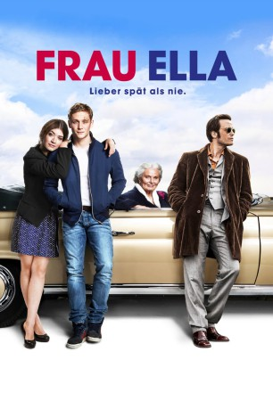
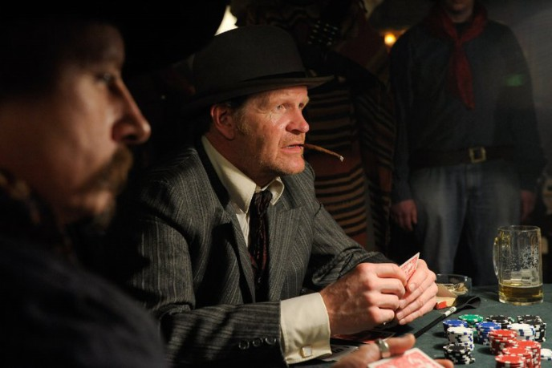

#9104 Frau Ella
 
 IMDB-Wertung: 5.9 / 10
IMDB-Wertung: 5.9 / 10  Metascore: 0
Metascore: 0 
Beim 30-jährigen Sascha überschlagen sich die Ereignisse. Völlig überraschend teilt ihm seine Freundin Linda mit, dass sie schwanger ist. Vom Schock benebelt verursacht er daraufhin einen Unfall und wird ins Krankenhaus eingeliefert. Für seinen Mitbewohner Klaus steht fest, dass der Unfall eine Botschaft war. Das sieht zunächst gar nicht danach aus, denn Sacha muss sich sein Zimmer mit der 87-jährigen Ella teilen, die ihm mächtig auf die Nerven geht. Doch als er mitbekommt, dass die alte Dame zu einer unnötigen Operation gedrängt wird flieht er kurzerhand mit Ella aus dem Krankenhaus. Nach der Flucht lernen sich die beiden näher kennen und Ella offenbart Sascha ein altes Geheimnis: Sie sehnt sich nach ihrer großen Jungendliebe Jason. Zusammen mit Klaus begeben sich die drei spontan auf eine abenteuerliche Reise nach Paris, um Ellas Traum Wirklichkeit werden zu lassen...
Jahr: 2013
Dauer: 104 Minuten
FSK: 0
Land: Deutschland Studio: Warner Bros.Tonspuren:
Untertitel:
Auflösung: 1080p (1920x816) Größe: 7577 MB
Genre: Drama, Komödie
Regisseur: Markus Goller
Drehbuch: Dirk Ahner
Soundtrack: Maurus Ronner, Martin Todsharow
Darsteller:
 Matthias Schweighöfer als Sascha
Matthias Schweighöfer als Sascha Ruth-Maria Kubitschek als Frau Ella
Ruth-Maria Kubitschek als Frau Ella August Diehl als Klaus
August Diehl als Klaus Anna Bederke als Lina
Anna Bederke als Lina Anatole Taubman als Rudolph
Anatole Taubman als Rudolph Sahin Eryilmaz als Arzt Krankenhaus
Sahin Eryilmaz als Arzt Krankenhaus- Andrej Melita als Swing-Band
 Michael Lott als Polizist (Berlin)
Michael Lott als Polizist (Berlin) Marleen Lohse als Marie (Altenpflegering Paris)
Marleen Lohse als Marie (Altenpflegering Paris)- Stella Stocker als Kellnerin Bar
 Tómas Lemarquis als Claude
Tómas Lemarquis als Claude- Peter Becker als Patrice
- Alex Tondowski als Polizeimeister Bretagne
-  Guntbert Warns als Polizeimeister Wohnung
- Anna Thalbach als Schwester Erika
- Luc Feit als Kalle
- Helmut Rusch als Pfleger Richie
- Karlo von Montag als Krückenpatient
- Peter Horn als Swing-Band
- Martin Probst als Swing-Band
- Franc Bruneau als Student Paris
- Yves Espargilière als Buchhändler Paris
- Pierre Henri Juhel als Mechaniker Bretagne
- Lozach Sébastien als Postbote Fahrrad Bretagne
- Lucie-Anaïs Le Gall als Brotmädchen Bretagne
- Gérard Croville als Alter Franzose
- Shade Koffi als Lily Grines
- Danielle van Bercheycke als Anna Grines
- Julia Schäfer als Frauenärztin
- Dennis Oestreich als Tankwart (uncredited)
Datei: X:\2013(A-F)\Frau Ella (2013, FSK0, 1920x816).mkv seit 19.07.2018
Festplatte: HD 2012(N-Z)-2013(A-H)
 Es gibt insgesamt 127 Filme in der Gruppe '2013(A-F)'
Es gibt insgesamt 127 Filme in der Gruppe '2013(A-F)'